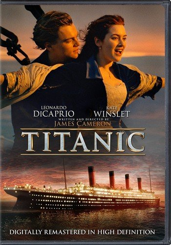

Focus
2015
- Fecha de Estreno: 5 de marzo de 2015
- Duracion: 1h 44m
- Genero: Romance/Crimen
- Valoracion: 56% en Rotten Tomatoes
- Trama: Nicky, un consumado estafador, se involucra sentimentalmente con su discípulo Jess, pero pronto termina su relación. Años más tarde, ella regresa como una mujer fatal para estropear sus planes.

Avengers
2012
- Fecha de estreno: 26 de abril de 2012
- Duracion: 2h 23m
- Genero: Acción/Aventura
- Valoracion 91% en Rotten Tomatoes
- Trama: Nick Fury se ve obligado a lanzar la Iniciativa Vengadores cuando Loki representa una amenaza para el planeta Tierra. Su escuadrón de superhéroes unió sus mentes para lograr la tarea.

Avengers End Game
2019
- Fecha de estreno: 26 de abril de 2019
- Duracion: 3h 2m
- Genero: Acción/Ciencia Ficción
- Valoracion 94% en Rotten Tomatoes
- Trama: Después de que Thanos, un señor de la guerra intergaláctica, desintegra la mitad del universo, los Vengadores deben reunirse y reunirse nuevamente para revitalizar a sus aliados derrotados y restablecer el equilibrio.

Bastardos sin Gloria
2009
- Fecha de estreno: 31 de agosto de 2009
- Duracion 2h 33m
- Genero: Guerra/Acción
- Valoracion: 89% en Rotten Tomatoes
- Trama: Algunos soldados judíos están en una misión encubierta para derrocar al gobierno nazi y poner fin a la guerra, liderada por el teniente Aldo Raine. Mientras tanto, una mujer quiere vengar la muerte de su familia causada por el oficial alemán Hans Landa.

Spider Man: Lejos De Casa
2019
- Fecha de estreno: 2 de julio de 2019
- Duracion 2h 9m
- Genero: Acción/Aventura
- Valoracion: 90% en Rotten Tomatoes
- Trama: Peter Parker, el amado superhéroe Spider-Man, se enfrenta a cuatro monstruos elementales destructivos durante sus vacaciones en Europa. Pronto, recibe ayuda de Mysterio, un compañero héroe con orígenes misteriosos.

Son Como Niños
2010
- Fecha de Estreno: 22 de julio de 2010
- Duracion: 1h 42m
- Genero: Comedia
- Valoracion: 11% en Rotten Tomatoes
- Trama: cinco amigos de la infancia llevan a sus familias a un viaje de fin de semana a una casa en el lago en su ciudad natal, donde se reúnen para asistir al funeral de su ex entrenador de baloncesto de la escuela secundaria.

Titanic
1997
- Fecha de Estreno: 19 de diciembre de 1997
- Duracion: 3h 14m
- Genero: Romance/Drama
- Valoracion: 89% en Rotten Tomatoes
- Trama: Rose, de diecisiete años, proviene de una familia aristocrática y está lista para casarse. Cuando sube al Titanic, conoce a Jack Dawson, un artista, y se enamora de él.
Avatar
2009
- Fecha de Estreno: 18 de diciembre de 2009
- Duracion: 2h 42m
- Genero: Ciencia Ficción
- Valoracion: 81% en Rotten Tomatoes
- Trama: Jake, que es parapléjico, reemplaza a su gemelo en la Pandora habitada por los Na'vi para una misión corporativa. Una vez que los nativos lo aceptan como uno de los suyos, debe decidir dónde radica su lealtad.